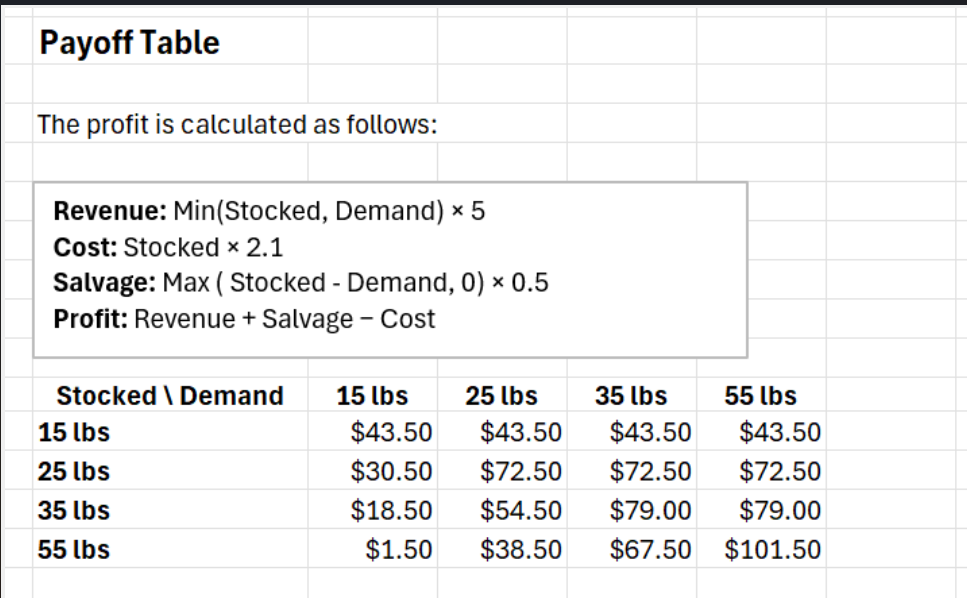
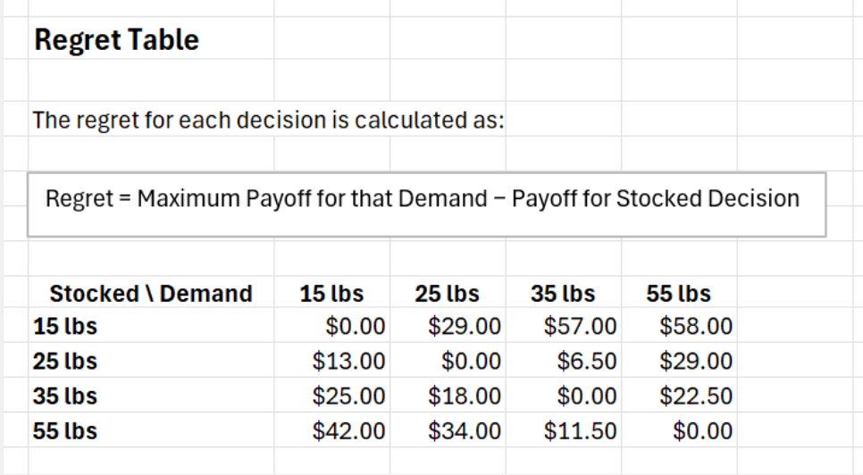
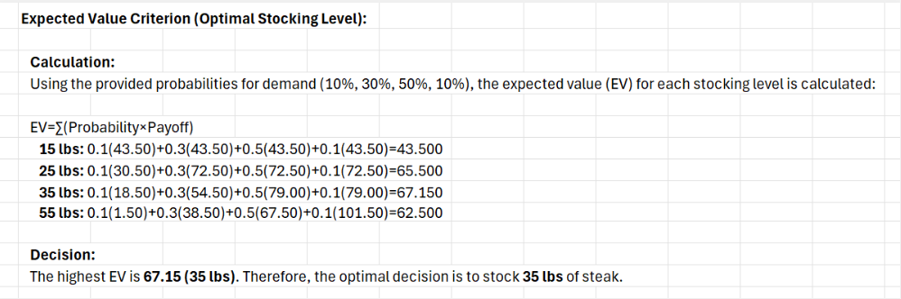
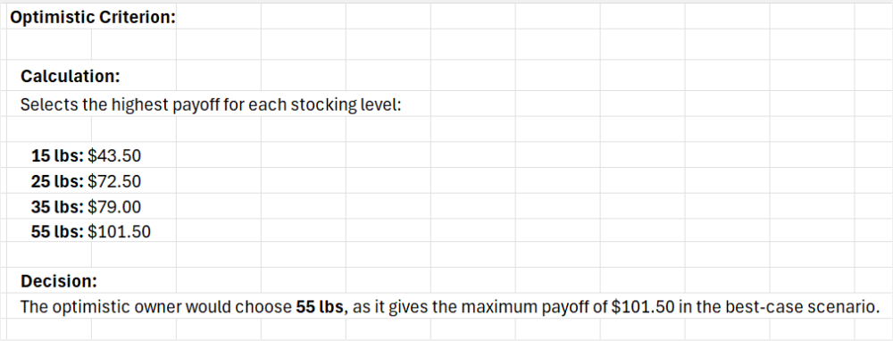
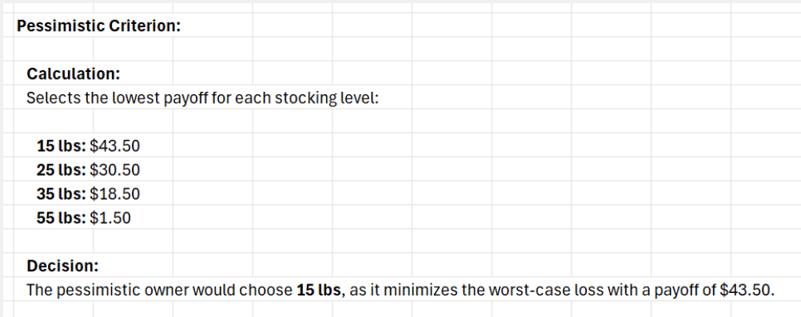
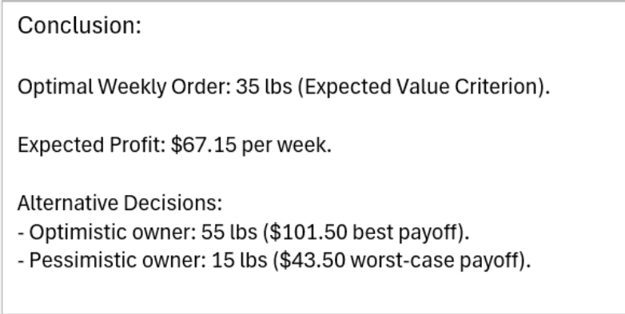
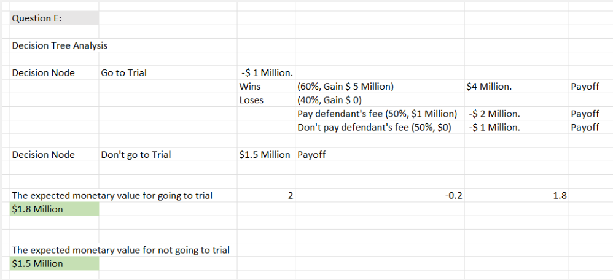

Problem B — Specialty steak stocking with payoff and regret tables
Perishable inventory decision making under demand uncertainty.
A grocery manager needed to decide how many pounds of a specialty steak to stock each week. The
meat is perishable, demand is uncertain, and unsold inventory must be marked down or discarded.
Ordering too little leaves money on the table, while ordering too much wastes product and margin.
- Defined several candidate order quantities and possible demand levels with probabilities.
- Built a payoff table that computed weekly profit for each combination of order quantity and demand.
- Derived a regret table to capture the opportunity loss of not choosing the best action in each demand state.
- Applied expected value, optimistic, pessimistic, and minimax regret criteria.
- Performed sensitivity analysis on demand probabilities to see when the recommended quantity would change.
Expected Profit(Q) = Σ over demand levels d [
P(D = d) · Profit(Q, d)
]
Regret(Q, d) = BestProfit(d) - Profit(Q, d)
Choose:
Q* that maximizes Expected Profit(Q)
and performs well under minimax regret.
The analysis indicated that ordering about thirty five pounds of steak per week generated the
highest expected profit, around seventy nine dollars, and remained robust under moderate changes
in demand probabilities. This turned a gut feel stocking decision into a clearly supported policy.

Payoff table showing weekly profit for each stocking quantity across multiple demand levels, incorporating revenue, salvage value, and purchase cost.

Regret table translating missed profit into opportunity loss, comparing each stocking decision to the best possible action under each demand scenario.

Expected value calculations identifying the 35 pound stocking level as the option with the highest average weekly profit across demand probabilities.

Optimistic (maximax) criterion highlighting the stocking level that achieves the best possible profit in the most favorable demand scenario.

Pessimistic (maximin) view of stocking decisions, emphasizing protection against worst case profits for highly risk averse managers.

Final conclusion summarizing that stocking 35 pounds per week is optimal under expected value and performs well under alternative decision criteria.
Problem E — Patent infringement lawsuit strategy using decision trees
Expected monetary value comparison of settling versus going to trial.
A firm faced a patent infringement dispute and had two main options: accept a settlement offer
or proceed to trial. Each path carried different probabilities of outcomes and very different
financial consequences. Management wanted a structured way to compare the options and see which
one created more expected value, before layering on subjective risk considerations.
- Mapped the situation into a decision tree with a decision node (settle or trial) and chance nodes for possible outcomes.
- Estimated probabilities of winning, losing, or achieving partial relief at trial.
- Attached monetary consequences to each outcome, including legal costs and potential damages.
- Calculated expected monetary value for both settling and going to trial.
- Interpreted the numeric result alongside qualitative risk tolerance and reputational concerns.
EMV(Settle) = Payoff_settlement
EMV(Trial) = P(win) · Payoff_win
+ P(lose) · Payoff_lose
+ P(partial) · Payoff_partial
Recommend the option with the higher EMV,
then validate against the firm's risk appetite.
The decision tree showed that pursuing the lawsuit to trial produced an expected monetary value of
roughly one point eight million dollars, compared to about one point five million dollars for
accepting the settlement. While the trial option carried more variability, the structured analysis
made it clear that, from a purely financial perspective, litigation was the better choice assuming
the firm could tolerate the added risk.

Decision tree payoff and probability table used to roll back expected monetary value for settling versus going to trial in the patent infringement case.